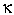

Signs for technical/specialized vocabulary
David Bar-Tzur
Links updated monthly with the help of LinkAlarm.

Radio telescope; Tokamak fusion reactor.1
EXPLANATION OF THE GLOSSING SYSTEM
(to understand how I describe the signs in this dictionary).
For content knowledge of how to use the physics terms in context, see Guided tutorial in physics for interpreters.
For negotiating and developing temporary signs, see Preparation and sign negotiation
For vocabulary lists to determine helpful signs for a specific discipline, see Vocabulary lists by topic.
- rabbi
- (1) (2h)[R], POs > signer, fingertips touch the top of the chest at each side and descend straight down the chest while touching it. For a QuickTime movie of this sign, see ASL browser - rabbi. (2) The previous sign starting from just above the ear.
- raccoon
- (2h)[V], PO towards, FOs ><, are held at eyes and separate while closing to (2h)[U]. For a QuickTime movie of this sign, see ASL browser - raccoon.
- race
- ~ (as in human ~)
- R-A-C-E.
- ~ (racing)
- (2h)[A], palms touch, FO away, hands twists as if each side was trying to pass the other.
- rachamim
- (1) KIND, that is, (2h)[B], POs > signer, FOs ><, DH revolves around NDH. (< wrapping a bandage as an act of kindness.) (2) FEEL PITY. Note: Some people avoid (2), believing it to be negative.
- Rachel (Jewish)
- R-SHEEP [< its meaning, "ewe (female sheep)"].
- racism
- R-A-C-I-S-M.
- racquetball
- (1) [bO] holds imaginary racquet and slams ball into wall forehand, then backhand. (2) [R] moves as if holding imaginary raquet and slams ball into wall forehand, then backhand. (3) [R] moves as if holding imaginary racquet and slams ball into wall forehand, then backhand while changing into a [B].
- radar
- NDH [1] touches [C], PO away, at wrist and DH sweeps back and forth like a radar dish. For a QuickTime movie of this sign, see ASL browser - radar.
- radhia allahu anhu
- PRAY HE MAKE ALLAH HAPPY.(Ar) "May Allah be pleased with him." Islamic honorific uttered after the mention of the high Kaliphs (Abu Bakar, Omar, Othman, Ali).
- radial velocity
- "V" R"subscripted.
- radian
- R-A-D.
- radiant
- ~ (person)
- (2h)[5], POs > signer, FOs up, hands move away from signer while fluttering FT.
- ~ (thing)
- (2h)[5], POs down, FOs away, DH is held above NDH and moves up while fluttering FT.
- radiant heat
- [5:] scratches up chin slightly several times + (2h)5wg-CL move away from source, POs > the source of heat.
- radiation
- ~
- DH [5] is held over NDH [S], PO down, FO > DS, and wiggles while rising to show radiation.
- ~ absorbed dose
- R-A-D.
- ~ hard
- R-D.
- radical
- ~ (calculus)
- Draw a square root sign with an [R].
- ~ (politics)
- POLITICS, LEFT STRONG.
- ~ (rebel)
- (1) [S], PO > back, FO up, is held on the backhand of NDH [B], PO down, FPO > DS, and DH pronates (twists away). (2) [S], PO > back, FO up, is held with elbow at waist level and DH pronates (twists away).
- radioactive
- DH [5], PO down, FO away, touches NDH [S], PO down, FO > DS, and wg while traveling upwards + POSS.
- radio controlled
- R-C.
- Radio Corporation of America
- R-C-A.
- radio frequency
- R-F.
- radio frequency interference
- R-F-I.
- radio galaxy
- RADIO + [5:], PO up, FO away, is held above [S], PO down, FO away. DH descend and strikes NDH while closing to [S] + (2h)[C], POs ><, FOs away, hands rush together (GRAVITY GROUP-TOGETHER = GALAXY).
- radio telescope
- RADIO + NDH [1] touches [C], PO away, at wrist and DH sweeps back and forth like a radar dish. For a QuickTime movie of the second sign, see ASL browser - radar.
- radio waves
- RADIO + W-A-V-E.
- radium
- R-A. For more information on this and other elements, see The elements. And for fun, see Elements by Tom Lehrer. To see this song with captions, go to The Elements song by Tom Lehrer.
- radius
- NFOrms [bC] to represent perimeter of circle and DH [1]
moves from perimeter to center of circle.
- radius of curvature
- DH [R], PO down, FO > NDS, touches the center of [B], PO up, FO away, and rises, then with NDH left in place, arc DH over NDH from wrist to FT so that the curvature passes through where [R] ended, since the radius goes from the center of curvature out to the curvature itself.
- radon
- R-N. For more information on this and other elements, see The elements. And for fun, see Elements by Tom Lehrer. To see this song with captions, go to The Elements song by Tom Lehrer.
- raid (Criminal Justice)
- (1) ENTER + (2h)[5], POs down, move down slightly and close with force to (2h)[S]. For a QuickTime movie of this sign, see ASL browser - raid. (2) (2h)[5], FOs ><, move towards each other and interlace FTs with force. (3) ENTER but with a larger emphatic movement.
- rainbow
- (1) [4], PO towards, touches FT to [B], PO up, FO away, and moves in an arc > DS. (2)[4], PO towards, touches FT to FT of [4], PO towards, FO up, and moves in an arc > DS. For a QuickTime movie of this sign, see ASL browser - rainbow.
- rain drop(s)
- (2h)[S], POs down, are held high and alt. flick index fingers downwards. For a QuickTime movie of this sign, see ASL browser - rain drop.
- rained out (baseball)
- RAIN, (2h)[A], DPO > NDS, drags little finger side backwards over NDH, PO down, FO away.
- raise
- ~ (camera)
- NDH [1] is held to the wrist of [B], PO away, FO up, both move upwards.
- ~ (exalt God)
- (1) (2h)[5], POs up, are raised high. For an animated gif of this sign, see Animated dictionary of religious signs - Deaf Missions: Exalt. (2) ADVANCED, that is, (2h)[B^], POs ><, FOs up, arc > signer a bit then move up in a definite movement. For an animated gif of this sign, see Animated dictionary of religious signs - Deaf Missions: Exalt.
- ~ (in pay)
- INCREASE.
- raise the dead
- (GOD) (2h)alt.REMIND, DEAD GET-UP. The second sign is (2h)[B^], alt. poke at those buried in the ground who awake from their "sleep".
- raisin
- (1) [R] supinates and pronates on the backhand of [B], PO down. For a QuickTime movie of this sign, see ASL browser - raisin. (2) [R] touches FT to side of nose and twists.
- rajah
- INDIA KING. For a QuickTime movie of this sign, see ASL browser - rajah.
- raked (auditorium)
- ~ (general)
- (2h)[O^], POs down, FOs away. DH moves away while NDH moves > signer.
- ~ (set floor)
- (1) [B], PO down and tilted slighty > NDS, FO away, moves > DS in a downward diagonal. (2) [B], PO down, FO away and tilted slighty > body, moves away in a downward diagonal.
- rally
- The clenched fists are held high and shook with enthusiasm. For a QuickTime movie of this sign, see ASL browser - rally.
- Ramadan
- [Bb] wipes FT across mouth + MONTH.
- rampart
- [S] arm is held out horizontally, FO > DS, [V] looks out in a sweep over the "wall". For a QuickTime movie of this sign, see ASL browser - rampart.
- ranch
- FARM. For a QuickTime movie of this sign, see ASL browser - ranch.
- random
- ~
- (1) MIX"each". For a QuickTime movie of this sign, see ASL browser - random. (2) CHOOSE with NDH [B], PO away, held close to DS eye as if shielding the eyes so that what is selected is unknown until it is examined.
- sample, select, or choose at ~
- CHOOSE with NDH [B], PO away, held close to DS eye as if shielding the eyes so that what is selected is unknown until it is examined.
- random access memory
- R-A-M.
- random access memory digital to analog converter
- R-A-M-D-A-C.
- random number
- CHOOSE"random" NUMBER, where the first sign is NDH [B], PO away, is held close to DS eye as if shielding the eyes so that what is selected is unknown until it is examined.
- random sample
- VALUE, that is, (2h)[F], POs><, FOs away, tap FTs together twice + CHOOSE with NDH [B], PO away, held close to DS eye as if shielding the eyes so that what is selected is unknown until it is examined.
- range
- DH [B], PO > NDS, bends multiple times at wrist from behind NDH [5], PO towards, "showing all the values".
- rank
- MAKE LIST, FIRST-PLACE, SECOND-PLACE, THIRD-PLACE. Where the -PLACE signs take the appropriate HS, PO towards, FO > NDS and move > DS.
- rape
- ~
- (1) NDH [S], PO down, FO away, is held in neutral space and DH [C], PO away, FO up, grabs at the side of NDH and passes it while closing to [S]. (2) (2h)[5:], POs away, FOs up, circle antisymmetrically, then descend while closing to (2h)[S].
- attempted ~
- TRY RAPE.
- raped
- [V] jabs neck with FT. For a QuickTime movie of this sign, see ASL browser - rape.
- rapids
- WATER + (2h)5-CL show the rough flow of water. For a QuickTime movie of this sign, see ASL browser - rapids.
- rapier
- (2h)[1], POs ><, DH slides along and off NDH + [bO] pulls sword from side with a twisting flourish. For a QuickTime movie of this sign, see ASL browser - rapier.
- rappel (mountain climbing)
- NDH [B], PO > DS, represents the side of the mountain and the V-CL on the DH represents the legs of the climber who pushes against the cliff.
- rapture
- CHRISTIAN GROUP, JESUS + (2h)[open 8], POs down, circle symmetrically and rise while closing to (2h)[O^] and mouth retracts tongue suddenly (thp).
- rarefaction (longitudinal)
- (2h)[5], POs ><, FOs away, rush apart while sucking in cheeks while traveling towards DS.
- rash
- (1) RED + [O^] opens to [5] while shooting up arm. For a QuickTime movie of this sign, see ASL browser - rash. (2) RED + [C] (or [F] or [bC]) places its thumbside on the ND upper arm. (This could be singed at the area of the rash.)
- rasha
- PERSON BAD*. (2) The X HSs make a half circle moving down from the corners of the mouth. For a QuickTime movie of this sign, see ASL browser - evil.
- raster
- R-A-S-T-E-R.S
- rate
- R-A-T-E.
- rate of return
- R-R.
- ratification, ratify (treaty)
- PASS. For a QuickTime movie of this sign, see ASL browser - ratify.
- ratio
- NDH [B], PO down, FO > DS, DH [1], points to numerator position above the NDH, then the denominator position below the NDH.
- rational
- ~ (following reason)
- [R] circles temple. For a QuickTime movie of this sign, see ASL browser - rational.
- ~ (number)
- R-A-T-I-O-N-A-L. Because the name come from the fact that the number can be expressed as a ratio, the sign RATIONAL would not be conceptually accurate.
- rationalization
- EXCUSE++ with th.
- rattlesnake
- (1) SNAKE + [1] rests wrist on [B], PO towards, FO > DS, and waves from side to side like WHERE. For a QuickTime movie of this sign, see ASL browser - rattlesnake. (2) SNAKE + "R".
- rav (rabbi)
- (1) (2h)[R], POs > signer, fingertips touch the top of the chest at each side and descend straight down the chest while touching. For a QuickTime movie of this sign, see ASL browser - rabbi. (2) The previous sign starting from just above the ear.
- ravine
- (2h)[O^], POs up, FOs away, are held in together in place while thumbs rub against FTs + (2h)[B], POs down, FOs away, are held together and then DH dips down and then up, describing a valley. For a QuickTime movie of this sign, see ASL browser - ravine.
- raw
- (1) R-A-W. (2) NOT COOK. For a QuickTime movie of this sign, see ASL browser - raw.
- ray
- ~s (if the focus is on the plural)
- [8] flicks middle finger against chin + [O^] touches FT to [B], PO down, FO away, then opens to [5] as it moves away. For a QuickTime movie of this sign, see ASL browser - ray.
- ~ (if the focus is on the path of a single ray)
- [8] flicks middle finger against chin + 1-CL points and moves in the direction of the given ray.
- raze
- DAMAGE + [B] slides pinkie side along [B], PO up, FO away. For a QuickTime movie of this sign, see ASL browser - raze.
- re- (prefix)
- (1) AGAIN. (2) R-AGAIN.
- reabsorption (at synapse)
- [5], PO away, FO up, closes to an [O^] as it strikes the NDH [S], PO > signer, FO > DS, at the "top" of the fist to show reuptake of seratonin.
- react
- (1) ANSWER. For a QuickTime movie of this sign, see ASL browser - reaction. (2) R-ANSWER.
- reactance
- "X".
- reactant
- CHEMICAL, REACT.
- reaction (chemistry)
- (1) (CHEMICAL) ANSWER. For a QuickTime movie of this sign, see ASL browser - reaction. (2) (CHEMICAL) R-ANSWER.
- Reactionary
- POLITICS, RIGHT STRONG.
- reaction quotient
- "Q".
- reactor (nuclear)
- R-ANSWER + (2h)[C], POs >< FOs away, show walls of reactor.
- reader (computers)
- READ MACHINE.
- reading
- (1) READ++. (2) READ++, but NDH stays in place while DH keeps moving > DS.
- read modify write
- R-M-W.
- read-only memory
- R-O-M.
- read-only storage
- R-O-S.
- read out loud
- READ WITH VOICE.
- read someone's mind
- (2h)[S], POs down, FOs ><, DH holds back of hand against DS temple and NDH is held opposite it. Both hands flick out index fingers twice directly at each other.
- read through (theater)
- READ THROUGH.
- read to (your)self
- READ, VOICE NONE.
- ready
- (1) (2h)[R], POs away, FOs up, hands shake from side to side in place. (2) (2h)[R], POs away, FOs up, both hands moves > DS. (3) (2h)[R], POs away, FOs up, are crossed at wrist and then uncrossed.
- Reagan, Ronald
- (there must be a "million" of these but some are -) (1) (2h)[R] pulled like revolvers from holsters at your side (< his cowboy movies); (2) [R)cuts across throat (< his many budget cuts); (3)[R)touches temple at DS and then flips back (< his hairstyle).
- reagent
- CHEMICAL REACT, TAKE-ADVANTAGE-OF.
- real
- ~ (not virtual)
- TRUE.
- ~ (numbers)
- R-E-A-L.
- realism
- REAL LIKE.
- realistic
- LOOK TRUE.
- reality
- REAL WORLD.
- Real Presence (Lutheran)
- JESUS TRUE (2h)THERE, where the last sign is (2h)[B], POs up, FO away, move down slightly.
- real property
- BUILDING PLUS GROUND.
- real time
- R-T.
- real time clock
- R-T-C.
- real time interrupt
- R-T-I.
- real time operating system
- R-T-O-S.
- reap
- [B], PO up, slices across top of [S], PO > DS. For a QuickTime movie of this sign, see ASL browser - reap.
- rearranging (terms)
- (2h)O^-CL'move terms around'.
- reasonable
- APPROPRIATE.
- reassure
- AGAIN VOW. For a QuickTime movie of this sign, see ASL browser - reassure.
- rebbe
- RABBI ME FREQUENT. FREQUENT = [Bb], PO > NDS, repeatedly taps NDH [1), PO away from signer.
- Rebecca (Jewish)
- [R] circles above wrist like someone binding the arms (< a Hebrew word meaning "binding"; interesting that she was married to Isaac who was bound on the altar).
- rebel (n & v)
- (1) [S], PO > back, FO up, is held on the backhand of NDH [B], PO down, FPO > DS, and DH pronates (twists away). (2) [S], PO > back, FO up, is held with elbow at waist level and DH pronates (twists away).
- rebirth (Hinduism)
- NOT-YET ENLIGHTENED, BORN AGAIN MUST.
- rebound
- (2h)[V], POs ><, FOs up, are held high above the shoulder and then bend to [V:] as the hand is pulled down. For a QuickTime movie of this sign, see ASL browser - rebound.
- receive data
- (1) R-D. (2) R-D-A.
- receive (language)
- ~ (general or neutral)
- (2h)[3], POs ><, FOs up, thumbs are held in neutral space between the eye and ear and fingers (not thumbs) wiggle.
- ~ (by ear)
- (2h)[3], POs ><, FOs up, thumbs are held at ears and fingers (not thumbs) wiggle.
- ~ (by eye)
- (2h)[3], POs ><, FOs up, thumbs are held at eyes and fingers (not thumbs) wiggle.
- ~ (by touch)
- DH [3] is held at palm of NDH [B], PO down, FO away, and DH fingers (not thumb) wiggle.
- receiver (electronics)
- R-C-V-R.
- receiving neuron
- GET+ NEURON.
- receptor
- [5^], PO away, FO up, closes to [O^] and makes contact with the FT of [1], PO > DS, FO up, repeatedly as if the NDH were soaking up signals.
- recess
- ~ (break time)
- DH [Bb], PO down, is inserted between the fingers of NDH [5], PO > signer, FO > DS.
- ~ (ceremonial)
- CELEBRATE FINISH, (2h)4-CL"stately procession of people single file".
- recession
- ~ (Astronomy)
- [5^] is held at eyes and leaves slightly upwards while receding from face.
- ~ (Economics)
- ECONOMY SLOW.
- recessional
- CELEBRATE FINISH, MUSIC FOR (2h)4-CL"stately procession of people single file".
- recessive
- (2h)[A], POs > opposite sides, DH [A] pronates and then returns to former PO under the DH.
- reciprocal
- ~ of a fraction
- NDH [B], PO down, FO > DS, show fraction bar while DH [V], PO away, FO > NDS, flips to show interchange of numerator and denominator.
- ~ (of something other than a fraction)
- (2h)[V], NDPO up, DPO down, FOs ><, arc upwards and exchange POs.
- Reciprocity of Perspectives
- [V], PO down, "looks at" [1] from signer's viewpoint, then circles and looks back at [1] from opposite viewpoint + me-SAME-AS-you as the [1] is still held in place.
- reckless
- [V], PO > NDS, FO up, waves past face 2x. For a QuickTime movie of this sign, see ASL browser - reckless.
- reckless endangerment
- RECKLESS CAUSE DANGER.
- recluse
- ALWAYS HIDE. For a QuickTime movie of this sign, see ASL browser - recluse.
- recombination (Physics)
- (<) NUCLEUS, (>) ELECTRON, AGAIN CONNECT. Where the first two signs are N-CENTER and "E".
- reconcile, reconciliation
- ~ (Accounting)
- PROVE AGREE.
- ~ (with God)
- (1) AGAIN CONNECT GOD. (2) #BACK-WITH-GOD, that is, (2h)[B], POs ><, FOs up, are held with NDH close to the body and the DH high and close to where God is spatialized. The hands transition to a C and then a K while rushing towards each other and contacting.
- reconnection (of magnetic force lines in the sun)
- (2h)[open F] touch FTs to make a circle. Pinch the index fingers and thumbs together to form two connected F's, then pull the hands apart quickly.
- Reconstructionism
- (1) R-E C-BUILD. (2) R-E BUILD. (3) R-E C-NICE.
- record
- ~ (n)
- ~ (computers)
- Base of [R], PO away, FO up, brushes palm along palm side of index finger of [5], PO > signer, FO > DS, while moving > DS.
- ~ (document)
- [O^] touches FT to [B], PO up, FO away + PAPER.
- ~ (phonograph)
- (2h)[open 8], DPO down, circles above NDPO up, FO away.
- ~ (sports)
- (World's) ~
- Elbow of DH [S], PO > signer, FO up, strikes the wrist of [S], PO down, FO > DS.
- break the ~
- Elbow of DH [S], PO > signer, FO up, is placed on the wrist of [S], PO down, FO > DS, and the DH falls > NDS while the elbow maintains contact, as if the record was felled like a tree.
- ~ (v)
- ~ (general)
- [O^] touches FT to [B], PO up, FO away, then DH flattens to a [B] and touches palm to palm.
- ~ (with taperecorder)
- RECORD HOW? TAPERECORDER, that is, [O^] touches FT to [B], PO up, FO away, then DH flattens to a [B] and touches palm to palm + HOW? + Index finger points to ear + (2h)[open 8], PO down, FO away, indicates the movement of the tape in the recorder.
- ~ (with video camera)
- , that is, [O^] touches FT to [B], PO up, FO away, then DH flattens to a [B] and touches palm to palm + HOW? + Index finger points to ear + index finger of the NDH is held at the wrist of the DH [3], PO > NDS and the DH waves slightly from side to side while maintaining contact with the NDH.
- record machine
- (2h)[open 8], PO down, FO away, indicates the movement of the tape in the recorder + MACHINE.
- recover, recovery
- ~ (computers and Health)
- (2h)[5], FTs touch shoulders and move away while closing to (2h)[S].
- ~ (refrigerant)
- (CHEMICAL OLD), TAKE-UP, where the last sign is (2h)[5:], POs down, FOs away, move upwards while closing to (2h)[S].
- recreation
- (1) R-E-C. (2) ENJOY.
- recruit
- (2h)[1], POs up, FOs away, fingers crook multiple times while moving from NDS to DS, as if gesturing for people to "come here". For a QuickTime movie of this sign, see ASL browser - recruit.
- rectangle
- (2h)1outline-CL draws rectangle.
- rectifier
- R-E-C-T.
- Rector
- [A dot], moves upwards in a slight outward arc with thumb pointing up.
- rectory
- (1) CHURCH HOUSE. For a QuickTime movie of this sign, see ASL browser - rectory. (2) RECTOR HOUSE.
- rectum
- NDH [F], PO > DS, FO away, DH [1] points to "hole" and then circles around and points to anus + [C]. PO > NDS, FO away, rises up from F-CL.
- recursive
- CALL/SUMMON SELF-INDEX, where second sign is [A], PO > NDS, FO away, taps twice on thumb side of [1], PO > DS, FO up.
- recycle
- R-E-C-Y-C-L-E.
- Red Cross
- RED CROSS. For a QuickTime movie of this sign, see ASL browser - Red Cross.
- red dwarf
- RED STAR + rolled-F-CL"sma".
- red green blue
- R-G-B.
- red shift
- NDH [5], PO towards, FO up and DH [B], PO > NDS, FO up. DH pivots from middle finger to thumb as if shifting towards the red side + RED.
- redeem, redemption
- (1) R-FREE. For a QuickTime movie of this sign, see ASL browser - redeem. (2) SIN PAY-OFF, that is, (2h)[X] touch their respective sides of the mouth, descend to neutral space and circle antisymmetrically parallel to the chest + [open 8] moves > NDS across palm of [B], PO up and then moves back to produce CLEAN.
- redeemed
- JESUS REDEEM (see above) INDEX-'person redeemed' FINISH.
- Redeemer
- REDEEM (see above) AGENT.
- reds (pills)
- PILL (which see) RED.
- reduced instruction set computer
- R-I-S-C.
- reduced mass
- Draw a lowercase mu (
 ) in the air.
) in the air.
- reduction (reaction, chemistry)
- R-E-D.
- redundant arrays of inexpensive disks
- R-A-I-D.
- Reed Solomon (error correction)
- R-S.
- reel
- FT of [R], PO down, FO > NDS, circles [S], PO down, FO away, vertically.
- reel-to-reel
- (1) (2h)[1], FOs away, circle symmetrically or antisymmetrically. For a QuickTime movie of this sign, see ASL browser - cassette tape. (2) (2h)[open 8], FOs away, circle symmetrically or antisymmetrically.
- reentrant, reentry (computers)
- (1) R-E ENTER. (2) R-AGAIN ENTER.
- re-establish (restore) equilibrium
- #BACK-TOGETHER EQUILIBRIUM, that is, (2h)[B], POs ><, FOs up, are held at respective sides. The hands transition to a C and then a K while rushing towards each other and contacting + BALANCE.
- referee
- (1) V:-CL held to mouth like a whistle and taps twice. (2) JUDGE.
- reference
- ~ (electronics)
- R-E-F.
- ~ (resumé, footnote)
- R-TECHNICAL, that is, FT of [R] taps little finger side of [B], PO > DS, FO away.
- referral
- FT of [R] brushes against top of [B], PO down, FO away, while moving away.
- reflect/ion
- ~ (general)
- (1) [1] bounces against palm of [B]. NDPO depends on how the surface is oriented in the problem under discussion. (2) [O^], PO away, FOs up, is brought to [B], PO away, FO up, and reflects off it while opening to [5]. (3) [R] bounces against palm of [B]. For a QuickTime movie of this sign, see ASL browser - reflect.
- diffuse ~
- [1] strikes palm of [B], PO > DS, FO up, and bounces off palm while hand opens to [5] to show the rays bouncing off in different directions.
- regular ~
- 4-CL'all rays bounce simultaneously off NDH B-
CL'PO down'.
- reflection nebula
- REFLECTION CLOUDY, that is [bO] brings FT to [B], PO away, FO up, and reflects off it while opening to [5] + (2h)[O^], NDHPO towards, DHPO away, touch at FTS , then move to opposite sides while opening to (2h)[5].
- reflex
- NDH [B] strikes [B], PO down, at wrist and DH jerks up at wrist.
- reflux (acid)
- A-C-I-D + [S] is held against stomach and flicks index finger up in the direction of the esophagus with a negative face.
- Reform, reform
- ~ (Movement, Judaism)
- (1)R-FREE. (2) R-NICE. (3) "R".
- ~ (Politics)
- CHANGE. For a QuickTime movie of this sign, see ASL browser - reform.
- ~ (verb)
- (1) CHANGE. (2) R-CHANGE.
- Reformation
- (1) CHANGE TIME-PERIOD. (2) R-CHANGE TIME-PERIOD.
- refraction
- ~
- NDH [B], PO > DS, FO up, is held as if it were the interface of refraction and DH [1] moves towards it from the DS and then "bends" at the interface in whatever direction and to whatever degree is being demonstrated.
- index of ~
- "N".
- refractory period
- (1) REST TIME-PERIOD. (2) POSTPONE TIME-PERIOD.
- refrigerant
- R-E-F CHEMICAL.
- refund
- (2h)[X], POs up, FOs away. FOs change to towards signer by bending wrists and the index fingers shoot out towards the signer as if being repaid. For a QuickTime movie of this sign, see ASL browser - refund.
- regent, Regent's (exam)
- R-MEMBER.
- region
- ~ (general)
- R-AREA.
- ~ (LDS [Mormon])
- R-GROUP.
- regional
- DH [5], PO down, rubs on thumb side of NDH [S] below it.
- register
- (cash) ~
- [5], PO diagonally away, circles while fluttering fingers as if using a cash register.
- ~ (computers)
- FT of [R], PO down, brushes along palm of [B], PO up, FO > DS.
- ~ (Linguistics)
- ~
- DH [B], pivots several times on palm of NDH [5], PO > signer, FO up, so that DFO points down ND FTs from thumb to little finger.
- consultative (~)
- [1], PO > signer, FO > NDS, is laid in the palm of [B], PO up, FO away and both hands move to and fro.
- formal (~)
- FORMAL.
- frozen (~)
- FREEZE+.
- informal (~)
- NOT + FORMAL.
- intimate (~)
- [V], touches lips and FTs alt. flutter so that sometimes middle finger touches lips and sometimes index finger does.
- ~ (v)
- FT of [H], PO down, brushes along palm of [B], PO up, FO > DS.
- registry (computers)
- R-E-G-I-S-T-R-Y.
- regression
- ~ (analysis, Math)
- R-E-G-R-E-S-S
- ~ (Psychology)
- (2h)[B], Little finger edge of DH strikes upperarm of NDH repeatedly while moving > NDH wrist.
- regret
- [Y] twists thumb against chin.
- regular, regularity
- (2h)[1], POs ><, FOs away, DH moves in a circle parallel to the chest and strikes the NDH as it passes and the non-manual signal is mm. For a QuickTime movie of this sign, see ASL browser - regular.
- regulator
- CONTROL MACHINE.
- regurgitate
- ~ (general)
- (1) (2h)[5], POs ><, FOs up, DH is touches chin, and both hands move forward in upward arc and shoulders heave with open mouth. (2) (1) with (1h).
- projectile ~ation
- (2h)[5], POs ><, FOs up, DH is touches chin, and both hands move slightly back, pause, and then (1h)[S] moves forward with force and opens to [5].
- rehabilitation
- (1) R-HELP. For a QuickTime movie of this sign, see ASL browser - rehabilitation. (2) R-E-H-A-B.
- rehearsal
- REHEARSE TIME-PERIOD.
- rehearse
- (1) PRACTICE. (2)R-PRACTICE. For a QuickTime movie of this sign, see ASL browser - rehearse.
- reign
- ~ (God ~s)
- CONTROL (LIKE KING).
- ~ (King)
- CONTROL.
- reincarnation
- SOUL HAND-DOWN.
- reinforce
- FT of DH [R] push up on [S], PO > signer, FO > DS. For a QuickTime movie of this sign, see ASL browser - reinforce.
- reinforced
- FT of DH [R] push up on [S], PO > signer, FO > DS + HAVE.
- reinforcement
- FT of DH [R] tap on [S], PO > signer, FO > DS, from below.
- reject
- ~ (disregard)
- (1) Little finger side of [B], sweeps away something from palm of [B], PO up, FO away, and DH ends with PO down. (2) [8] flicks something off palm of [B], PO up, FO away.
- ~ (turn down)
- THUMBS-DOWN.
- rejoice
- CELEBRATE. For a QuickTime movie of this sign, see ASL browser - rejoice.
- relapse
- ~ (addiction)
- [V] touches FT to [B], PO up, and "slips and falls".
- ~ (health science)
- SICK AGAIN. For a QuickTime movie of this sign, see ASL browser - relapse.
- relational (computers)
- RELATIONSHIP.
- relationship
- (2h)[F], interlink FTs and move back and forth between the two things that have a relationship.
- relative
- ~ (adj)
- (1) COMPARE. (2) R-COMPARE.
- ~ (n)
- (1) R-FRIEND. (2) 1-FRIEND, that is fingers are straight rather than curved. (3) FAMILY 1-FRIEND.
- relative dielectric constant
- Draw a lowercase kappa () in the air + T"superscriped".
- relative humidity
- R-H.
- relative permittivity
- Draw a lowercase epsilon (
 ) in the air.
) in the air.
- relativistic red shift
- R-COMPARE RED INTERVAL-SHIFT-TO-rt, where the last sign is (2h)[B], POs ><, are held across from their respective hips and then both move > DS in an upward arc.
- relay (between TTY and voice phone)
- (1) (2h)[R], POs ><, FOs up, pass one another once as they cross in front of the face. For a QuickTime movie of this sign, see ASL browser - relay. (2) (2h)[1], FOs up, are held at chest with DH closer to signer and index fingers flutter twice, that is, become (2h)[1^].
- relay interpreting
- R-SEND INTERPRET.
- release
- DISCONNECT.
- reliability, reliable
- DEPEND CAN.
- reliability-availability-serviceability
- R-A-S.
- Relief Society (LDS [Mormon])
- "R" "S".
- religion
- (1) [R] touches FTs to heart and then hand twists so that FTs are away. (2) (rare) R-GOVERNMENT.
- religious (person)
- ~ (Christian)
- (1) (2h)[B with ring finger folded into palm], hands held up then moved backwards in sudden movement. This sign can have negative connotation of being "too" religious. (< the gesture seen in some paintings of Christ.) (2) Same as (1) but (1h).
- ~ (general)
- (1) RELIGION STRONG. (2) RELIGION STRICT. (3) NDH is clasped over DH [S] and hands circle perpendicular to the chest. (< prayerful.)
- ~ (Jewish)
- [A], PO > signer is beaten against heart. (< gesture of contrition during prayer.)
- ~ (Roman Catholic)
- Sign begins like STAND and the DHFTs are bent into KNEEL. (< genuflection.)
- rely
- DEPEND CAN.
- relocatable (computers)
- MOVE CAN.
- relocate (computers)
- MOVE.
- relocation (computers)
- MOVE"each".
- reluctance
- ~ (electronics)
- FT of [R] writes a script uppercase "R" in space.
- ~ (reluctant)
- [B] holds palm against chest, FO > NDS, and with reluctance moves hand away until PO is up with a single cluck of the tongue.
- reluctivity
- Draw a lowercase nu (
 ) in the air.
) in the air.
- remainder
- (2h)[5], POs ><, FOs away, move downwards as if leaving something.
- remand
- COURT SEND #BACK (context will say to what).
- Rembrandt (van Rijn)
- Since he was Dutch, this Dutch sign might be useful: [R], PO down + (2h)[B], POs ><, NDH is held high, DH is held low, and then each exchange levels while brushing by each other. From http://www.effathaguyot.nl/index.php?stab=1&signfirst=R (Effatha - Gebarenboek), which is no longer extant.
- remission
- ~ (from illness)
- SICK SOLVE GET-BETTER.
- ~ (of sins)
- SIN, GOD EXCUSE.
- remote
- ~ (adj)
- (1) (2h)[A], FO away, touch palms and then DH hops forward with upward arc, firstly slowly and then rapidly to show intensive. (2) [1] points diagonally up and recoils backwards with pow. (3) [1] points diagonally up and keeps twisting at wrist while moving forwards with lalala.
- ~ (control)
- [A dot], PO > NDS, FO away, thumb clicks against index finger as if operating a remote. For a QuickTime movie of this sign, see ASL browser - remote control.
- remote job entry
- R-J-E.
- remote procedure call
- R-P-C.
- rendering
- DRAW COLOR + (2h)alt.PUT moving away. Add to art and computers
- renounce
- (2h)[S], FOs down are held down at their respective sides and then are lifted high while changing into (2h)[B or 5], POs away. For a QuickTime movie of this sign, see ASL browser - renounce.To vow that one will never again do certain or any evil acts.
- repeal
- CANCEL.
- repeater (computers)
- AGAIN++.
- repel (physics)
- (2h)[8], POs ><, FOs away, separate rapidly while changing to (2h)[open 8].
- repent, repentance
- ~ (general)
- (1) R-CHANGE. For a QuickTime movie of this sign, see ASL browser - repent. (2) SORRY. (3) GET-#BACK-WITH-God.(4) CLEAN OFFER-TO-God.
- ~ (Jewish)
- [A], PO > signer is beaten against heart.
- repertory
- R-E-P.
- replenish petty cash
- P-C, DH [O^], PO down, is held against NDH [B], PO down, and DH opens to a [C] with thumb still touching NDH to show the money piling back up.
- replicate
- COPY.
- replication
- COPY++.
- report program generator
- R-P-G.
- repossess
- (2h)[5], POs down, FOs away, move down while closing to (2h)[S].
- Representative (from the House of ~s)
- R-SHOW + AGENT.
- repress
- (2h)[5:], FTs touch chest and descend while closing to (2h)[S].
- repression
- REPRESS+.
- Republican party
- "R" P-A-R-T-Y.
- repulse, repulsion (physics)
- (2h)[8] touch FTs with NDPO away and DPO > signer, DH moves away while opening and NDH stays in place without opening.
- reputation
- ~
- NAME.
- bad ~
- NAME BLACK.
- good ~
- NAME~SHINY where the second half of the sign leave the NDH in place and the DH becomes [open 8] and twists at the wrist as it moves upwards.
- request for comments
- R-F-C.
- request to send
- R-T-S.
- required (dive)
- HAVE-TO.
- research
- [R] digs FT twice into [B], PO up, FO away.
- research and development
- "R" AND "D".
- resident (computers)
- R-LIVE.
- residential
- (1) LIVE+. (2) R-LIVE+.
- residential school
- (2h)[I], POs ><, FOs away, DH strikes the top of NDH twice.
- resign
- [V:] hops out of [C], PO > DS, FO away, and to side.
- resist, resistance (invaders, forces, or cheaters)
- (2h)bC, POs away, FOs up, push away.
- resistance (electronics)
- "R".
- resistance-capacitance
- R-C.
- resistance-capacitance-inductance (circuit)
- R-L-C.
- Resistance movement
- (2h)bC, POs away, FO diagonally away, push away + MOVEMENT, which is (2h}[O^], POs down, FOs away, move forward as if marching.
- resistance temperature detector
- R-T-D.
- resistance transistor logic
- R-T-L.
- resistivity
- Draw a lowercase rho (
 ) in the air.
) in the air.
- resistor
- (2h)[R], POs ><, FOs up, tap at wrists twice.
- resistor current (IR)
- I R"subscripted".
- resolution (optics)
- HOW-MUCH CLEAR?
- resolve into components along the x and y axis
- DIVIDE, (<) PART FOLLOW "X" 1-CL'point along x-axis on L-CL', (>) PART FOLLOW "Y" 1-CL'point along y-axis on L-CL'.
- resolving power
- Draw an alpha with the index finger.
- resonance
- NATURAL "F". Where the last part represents "frequency".
- resource(s)
- R-THING. For a QuickTime movie of this sign, see ASL browser - resource.
- respiration
- (2h)[5], POs towards body move in and out from chest as if imitating breathing. For a QuickTime movie of this sign, see ASL browser - respiration.
- respondent
- ANSWER AGENT.
- response
- R-ANSWER.
- (at) rest (physics)
- STAY. MOVE NOTHING.
- resultant
- R-END VECTOR, where the second sign is "V" shaken below NDH [1], PO down, FO > DS.
- results
- (1)R-END. (2) END "WHAT"?
- resurrection
- GET-UP. For an animated gif of this sign, see Animated dictionary of religious signs - Deaf Missions: Resurrection.
- retained earnings
- "R" "E".
- retaining wall
- PROTECT WALL.
- retaliate
- (1) (2h)[bX], POs ><, FOs away, hands are held at side and DH rushes > NDH and strikes its FT against that of NDH. For a QuickTime movie of this sign, see ASL browser - retaliate. (2) As in (1), but NDPO is down and DH strikes it from below.
- retarded (mentally)
- (1) D-D (developmentally disabled). (2) [R] touches temple. For a QuickTime movie of this sign, see ASL browser - retarded. May be seen as offensive, (1) is preferable.
- retarding (motion)
- (2h)[5], POs down, FOs away, move downward slightly, pause, move downward again several times, as if try to push something down that is, resisting.
- reticular activating system
- R-A-S.
- retinal detachment
- R-E-T-I-N-A DETACH, where the second sign is the opposite movement of CONNECT.
- retinitis pigmentosa
- [R] touches temple, then [P] touches side of chin.
- retreat
- (1) [R] touches forehead, then chin. (2) [R] touches forehead, then [T] touches chin. (3) R-ESCAPE.A group meeting away from the everyday world to focus on improving oneself.
- retrieval, retrieve
- GET (2h)#BACK, where the second sign starts with (2h)[B], POs > signer, FOs up, and moves > the signer while roughly bending into (2h)[5:], then (2h)[K].
- retrospective
- LOOK-BACK, that is, (2h)[V] or (2h)[U] "looks back" over DS shoulder.
- return
- ~(s, profit)
- PROFIT.
- ~ (computers)
- (1) (2h)[R], FT roll around each other as they move > signer like one variant of COME. (2) [R], PO away, FO up, moves > DS, then returns to original position. (3) R-E-T.
- ~ (general)
- (2h)COME-#BACK, that is, (2h)[5], POs > signer, FOs up, move > singer while changing to (2h)[K].
- reunion
- AGAIN CONNECT. For a QuickTime movie of this sign, see ASL browser - reunion.
- reuptake (of seratonin at synapse)
- [5], PO away, FO up, closes to an [O^] as it strikes the NDH [S], PO > signer, FO > DS, at the "top" of the fist to show reuptake of seratonin.
- reveal
- (1) SHOW. (2) R-SHOW.
- revelation
- (1) GOD ANNOUNCE. (2) GOD SHOW"all".
- Revelations (Ἀποκάλυψις Ἰωάννου)
- R-E-V.
- revenge
- (1) (2h)[bX], POs ><, FOs away, hands are held at side and DH rushes > NDH and strikes its FT against that of NDH. For a QuickTime movie of this sign, see ASL browser - retaliate. (2) As in (1), but NDPO is down and DH strikes it from below.
- revenue
- (1) MONEY EARN. For a QuickTime movie of this sign, see ASL browser - revenue. (2) R-E-V.
- reverberate (acoustics)
- [O^], PO down, is struck against [B], PO away, FO up, and then vibrates like a bell. For a QuickTime movie of this sign, see ASL browser - reverberate.
- revere
- (1) RESPECT. (2) (2h)[B], POs away, torso and hands bow down to direct object.
- reverent
- RESPECT-God.
- reversal (photography)
- (2h)[V], NDPO up, DPO down, FOs ><, arc upwards and exchange POs.
- reverse (diving)
- [1], PO down, FO > NDS, circles out, like a (1h) version of TO-SIGN.
- reverse pike (diving)
- [B^], PO down, FO > NDS, touches FT to [B], PO down, FO > DS, and DH jumps up to an [O^], PO still down, then becomes a [B], PO > NDS, FO up.
- reverse Polish notation
- R-P-N.
- reverse reaction
- Right hand points to left side (despite dominance) + R-ANSWER.
- reversible (reaction)
- REVERSE++ CAN, where the first sign is (2h)[V], NDPO up, DPO down, FOs ><, arc upwards and exchange POs several times.
- review
- (1) Thumb of [L] touches palm of [5], PO > signer, FO up, and DH index finger first points in the same direction as the NDH little finger does, and then moves > NDS until FT points in the direction as NDH thumb. (2) PO of [R] faces palm of [5], PO > signer, FO up, and FT first point in the same direction as the NDH little finger does, and then moves > NDS until FT points in the direction as NDH thumb.
- revival
- R-EXCITED. For an animated gif of this sign, see Animated dictionary of religious signs - Deaf Missions: Revival.
- revive (the dead)
- DEAD PEOPLE, GOD (2h)alt.REMIND, HIT* THEY LIVE.
- revolution
- R-E-V.
- revolutions per minute
- (1) R-P-M. (2) "N".
- revolutions per second
- R-P-S.
- revue
- ACT VARIOUS.
- reward
- (1) (2h)[X], POs ><, are held first with FOs up, and then move forward and twist to FOs away. For a QuickTime movie of this sign, see ASL browser - reward. (2) PRAISE + (1) above.
- rhenium
- R-E. For more information on this and other elements, see The elements. And for fun, see Elements by Tom Lehrer. To see this song with captions, go to The Elements song by Tom Lehrer.
- rheostat
- [5:], PO away, twists at a dialable knob.
- RH factor
- R-H F-A-C-T-O-R.
- rhinoceros
- [C] is held at nose and moves up in arc while closing to [S] to show shape of the rhino's horn. For a QuickTime movie of this sign, see ASL browser - rhinoceros.
- rho (lowercase, )
- Draw the shape of the letter in the air with the index finger.
- rhodium
- R-H. For more information on this and other elements, see The elements. And for fun, see Elements by Tom Lehrer. To see this song with captions, go to The Elements song by Tom Lehrer.
- rho meson (+)
- Draw a rho in the air + POSITIVE"superscripted".
- rho resonance meson ()
- Draw a rho in the air + R-E-S-O-N-A-N-C-E.
- rhyme
- WORD SOUND MATCH.
- rhythm
- ~ (birth control)
- FT of [R] is tapped rhythmically on wrist of NDH.
- ~ (Music)
- (1) FT of [R] draws sinusoidal wave in the air. See "sinusoidal wave" for an illustration of this shape. For a QuickTime movie of this sign, see ASL browser - rhythm. (2) FT of [R] is tapped rhythmically on wrist of NDH.
- rib(s)
- (2h)4-CL trace ribs from lower chest to respective sides. For a QuickTime movie of this sign, see ASL browser - rib.
- ribonucleic acid
- R-N-A.
- ribosomes
- R-I-B.
- rich (figurative, has lots of flavor and so on)
- R-I-C-H.
- rich galaxy cluster
- [5:], PO up, FO away, is held above [S], PO down, FO away. DH descend and strikes NDH while closing to [S] + (2h)[C], POs ><, FOs away, hands rush together (GRAVITY GROUP-TOGETHER = GALAXY) R-I-C-H.
- Riemann product
- (1)Index and little fingers of DH are pointed downwards. (2) DH [1], PO down, FO > DS is held above and taps FT of NDH [V], PO away from signer, FO up.
- Riemann sum
- Draw a uppercase sigma (
 ) in the air.
) in the air.
- rifle
- (2h)[L] are held like rifle with NDH behind DH and both cock thumbs and move as if rifle has gone off. For a QuickTime movie of this sign, see ASL browser - rifle.
- rift valley
- CRACK + (2h)Bb-CL'plates separate and DH show valley from NDH's side', that is, [Bb], PO > NDS, FO away, moves > signer in a zigzag motion + (2h)[Bb], POs down, FOs away, touch thumb sides, suddenly split, then DH traces the valley from NDH side to where the DH ended when it split.
- right
- ~ (correct)
- (2h)[1], POs ><, FOs away, DH strikes top of NDH from above.
- ~ (direction)
- Right hand [R], PO away, FO up, moves > right.
- ~ (have a ~ to do something)
- (2h)[B], DPO > NDS, DFO away, is held in palm of NDPO up, NDFO > DS, and DH moves forward while curling FO up.
- ~ (not left)
- [R], PO away, FO up, moves > DS.
- ~ (possessing a ~ angle, as in ~ triangle)
- NDH [L], PO away, FO up, is held out while [1] outlines the inside of the "L".
- right angle
- NDH [L], PO away, FO up, is held out while [1] outlines the inside of the "L".
- right-click
- RIGHT + [X] clicks on palm of ND [B] as if it were a key.
- righteous, righteousness
- (1) (2h)[B], DH slides pinkie side of hand down the middle of NDH, PO up, FO away from signer. (2) DH [R] slides FTs down the middle of NDH [B], PO up, FO away from signer. [(1) & (2) < old sign for "straight".] (3) Elbow of DH [S] is placed firmly in the palm of NDH [B]. Similar to the sign SET-A-RECORD, but the NDPO is up.
- right field
- R-F.
- right-hand decimal point
- R-H-D-P.
- right-hand rule - To find the direction of the force on the charge, with a flat hand, point your thumb in the direction of the velocity of the positive charge and your fingers in the direction of the magnetic field. The direction of the force is out of the palm of your hand.
- This is often used on blackboards, so this is a good place to talk about whether to reverse what's on the blackboard or not. It certainly is not necessary to represent equations from the signer's right to the signer's left (unless the interpreter is left-handed), as if Deaf people were not used to reading fingerspelling from the signer's perspective. If the interpreter is representing a visual such as a drawing on the blackboard or an overhead, the interpreter should "reverse" their drawing so that if for example an inclined plane slopes form the audience's left to their right, the interpreter makes it slope from their left to their right also (which would be from the interpreter's right to his/her left). In this situation, the interpreter might turn slightly to emphasize that it is coming out of the blackboard behind and the interpreter is not doing it from his/her perspective.
- right hemisphere (brain)
- RIGHT B^-CL'sweep back @ rt rim of head'.
- right-justify
- RIGHT + [B], PO > NDS, FO away, moves down on right side to show margin.
- rights (as in "civil ~")
- (2h)[B], DPO > NDS, DFO away, is held in palm of NDPO up, NDFO > DS, and DH moves forward while curling FO up.
- rigid
- (1) FREEZE. For a QuickTime movie of this sign, see ASL browser - rigid. (2) DH grasps NDH with its fingers and tries to wiggle the NDH fingers, as in FLEXIBLE, but the fingers are "rigid". (3) FLEXIBLE NOT.
- rimming
- (1) Nail side of [H] strokes upward like tongue against hole of [F]. (2) (2h)[B], POs away, are held together so that thumbs and index fingers touch or nearly so, and are brought in a circular motion towards and down the face while the tongue moves.
- rimmonim
- TORAH, S-I-L-V-E-R (2h)O-CL'silver ornaments slid onto top of rollers'.
- ring
- ~ (general)
- [open F] rubs sides of ring finger 2x.
- ring (piston)
- ~
- (2h)[bC], POs ><, FOs away, are brought together twice.
- ~s
- (2h)[bC], POs ><, FOs away, are brought together three times while descending.
- ring indicator
- R-I.
- ring laser gyroscope
- R-L-G.
- ring stand
- FT of [R] touches NDH [1], FO up, then circles horizontally until it comes back to its starting point.
- rink
- R-I-N-K.
- riot
- (2h)[5:], NDPO up, DPO down, are held side by side but with the DH held higher, hands exchange POs and levels. For a QuickTime movie of this sign, see ASL browser - riot.
- rise
- (in quantity)
- INCREASE.
- Please ~!
- (2h)[B], POs down, FOs away from signer, move down slowly.
- rise from the dead
- (GOD) (2h)alt.REMIND, DEAD GET-UP. The second sign is (2h)[B^], alt. poke at those buried in the ground who awake from their "sleep".
- riser
- [V^], PO down, FO away, runs up the stairs moving away + (2h)[B], POs away, NFO > DS, stays in place as a base and DH hops upwards showing the vertical surfaces of the stairs.
- rising action
- [B], PO down, FO away, rises diagonally.
- risk
- (1) R-I-S-K. (2) [R] is drawn across neck like a knife.
- (high) risk behavior
- DANGEROUS DO.
- risk taking
- DECIDE + (2h)[1], POs > singer, FOs up, FTs point to respective ears, then move forward while opening to (2h)[5].
- rite
- (1) R-HABIT. (2) R-I-T-E.
- ritual
- (1) R-HABIT. (2) R-I-T-U-A-L.
- RNA
- (1) R-N-A. If useful, add "double helix": [V(2h)[V], DHPO away, NDHPO towards, FTs touch and hands pronate and supinate while separating.
- roach
- ~ (insect)
- (2h)[5], cross hands and touch nose with thumbs while wiggling fingers.
- ~ (marijuana)
- ~
- (1) [G], PO away + [5], PO > NDS, nods at wrist so that PO stats but FO changes from up to down. (2) [L] touches corner of mouth with thumb and closes to [G] while maintaining contact (as if a cigarette were smoked down to the butt) + [G], PO away, moves forward slightly.
- ~ clip
- (1) Thumb and index finger tap against one another while held close to mouth. Most common variant. (2) Thumb and index finger tap against one another in neutral space. Used more to ask if someone has a clip. (3) DH [1] rubs FT against base of NDH [1], PO > DS, FO away. Rare. (4) Fingerspelled loan sign where [L] and [I] are combined: C-L&I-P.
- roast
- ~ (n)
- R-B.
- ~ (v)
- <[5] wg FTs at [B], PO down, from far above. Compare with BROIL.
- roast beef
- R-B.
- robbery
- (1) [V], PO down, bends FT rapidly while supinating and appproaching signer, as if something were stolen. (2) To make a distinction between this and stealing, here are two signs for "robbery": (a) (2h)[U], POs down are held under nose, DH higher, and separate rapidly. For a QuickTime movie of this sign, see ASL browser - rob. (b) (2h)[U dot], PO towards, FOs ><, are held under nose, separate rapidly, and are brought forward as if they were guns.
- robe
- (2h)[O^] draw FTs down chest from shoulders to waist.
- robot
- The signer mimes the stiff walk associated with robots. For a QuickTime movie of this sign, see ASL browser - robot.
- Roche limit
- R-O-C-H-E LIMIT.
- Roche lobes
- R-O-C-H-E + (2h)[O^] join fingertips like MORE but just once.
- Roche surface
- R-O-C-H-E + (2h)[O^] join fingertips like MORE but just once, then with NDH held in place the [B^] rubs the knuckles of the NDH.
- Rochester Method
- ROCHESTER M-WAY, FINGERSPELL. ROCHESTER = [R], PO down, FO away, traces a "7" from top to bottom.
- rocket
- [R] takes off upward along [B], PO > DS, FO up. For a QuickTime movie of this sign, see ASL browser - rocket.
- rocket launch
- [R] takes off upward from center of [B], PO up. For a QuickTime movie of this sign, see ASL browser - rocket launch.
- roentgen
- "R".
- roentgen equivalent man
- R-E-M.
- roentgen equivalent physical
- R-E-P.
- role
- DH [R], PO away, FO up to down to up again, circling and land on palm of [B], PO > DS, FO up.
- roll down window
- (1) WINDOW + B-CL(PO > NDS, FO away)'window moves down'.
- roller skating
- (2h)[V:], POs up, FOs away, move alt. to and fro like the natural movement of the feet.
- roll up window
- WINDOW + B-CL(PO > NDS, FO away)'window moves up'.
- Roman Catholic
- [H] traces cross at forehead.
- romance
- ~ (real)
- ROMANTIC, that is, (2h)[A dot], press together with PO against heart and thumbs wiggle.
- ~ (Literature)
- STORY + ROMANTIC, where second sign is (2h)[A dot], press together with PO against heart and thumbs wiggle.
- Romania
- (1) (2h)[5], FOs up, touch FTs then separate while closing to [O^]. (2)
[bC], PO towards, runs FT from NDS shoulder to DS waist. For a QuickTime movie of this sign, see ASL browser - Romania. To see the reference source for the sign(s) for this country or to look up other countries in the same geographical area, see Indigenous signs for countries. To find signs for cities within this country (some have no entries) see Indigenous signs for cities.
- Romans (Πρὸς Ῥωμαίους)
- R-O-M.
- Rome
- (1) [R] touches bridge of nose and then tip of nose. (< nose protector of ancient Roman helmet.) (2) (2h)[H] cross FTs and DH taps on NDH from above like the ASL sign NAME. For a movie of this sign, see Roma.
- roll (the tape, command in media production)
- (2h)[R], FOs ><, roll around each other.
- Roosevelt, Franklin Delano
- "F" "D" "R".
- Roosevelt, Teddy
- [X] touches thumb side to bridge of nose once (twice is DOLL). (< his pince-nez.)
- rooster
- Thumb of [3], FO up, strikes 2x at forehead.
- root
- ~ (biology)
- [S], FO down, is held by NDH and then breaks through downward while opening to [5]. For a QuickTime movie of this sign, see ASL browser - root.
- ~ (calculus)
- Draw a square root sign with an [R].
- root beer
- R-B is signed at corner of mouth.
- root-mean-square
- R-M-S.
- rosary
- (2h)[R], POs away, FOs up, are held side by side and separate to make a circle, meeting again with POs down and FOs down. For a QuickTime movie of this sign, see ASL browser - rosary.
- Rosh Chodesh
- NEW MOON.
- Rosh haShannah
- (1) (2h)[S] is held close to the lips as if blowing a shofar (ram's hour). The DH, which is further from the mouth, moves away and up, changing to a [5:] in imitation of the shofar's shape.(2) JEWISH NEW YEAR.(3) R-NEW H-YEAR.
- rotary
- (2h)[1], FTs ><, DH rotates FT around FT of NDH.
- rotate, rotation
- ~ (mechanical)
- (2h)[1], FTs ><, DH rotates FT around FT of NDH.
- ~ (diving)
- [1], PO down, FO > NDS, circles perpendicular to the chest.
- ~d by an angle (instead of being parallel to either the x- or y-axis)
- Use NDH [L] as a classifier to show the x- and y-axes. Draw a line parallel to the thumb (x-axis), sign NO, then parallel to the index finger (y-axis), sign NO, finally draw a line at an angle.
- rotation curve (Astronomy)
- ROTATE GRAPH, where the first sign is (2h)[1], FTs ><, DH rotates FT around FT of NDH.
- round (v, "estimate")
- ~-down
- DECREASE, MAKE APPROXIMATE.
- ~-off
- MAKE APPROXIMATE TO CLOSEST. . . and then add whatever the number is rounded to, for example, "round off to the closest tenth" - GUESS TO CLOSEST ONE-TENTH.
- ~-off to the nearest tenths (for example)
- MAKE APPROXIMATE TO NEAR -EST TEN T-H 'S.
- ~-up
- INCREASE, MAKE APPROXIMATE.
- router
- R-O-U-T-E-R.
- routine
- ~ (adj)
- SAME-OLD-SAME-OLD, that is, (2h)[Y], POs down, FOs away, move in antisymmetric circles parallel to the chest, with the hands descending when closer to the body and ascending when further away, while mouthing sta.
- ~ (n, computers)
- R-PROGRAM, that is, [R] rises up [B], PO towards, and goes down other side.
- routing control center
- R-C-C.
- routing switcher
- R-O-U-T-I-N-G + (S], PO down, FO away, pulls back switch, then pushes it forward.
- row address strobe
- R-A-S.
- royal
- R-KING. For a QuickTime movie of this sign, see ASL browser - royal.
- royalty
- R-KING. For a QuickTime movie of this sign, see ASL browser - royalty.
- Ruach haKodesh
- GOD SPEAK DIRECT.
- rubber
- [X] brushes thumb side against cheek several times. For a QuickTime movie of this sign, see ASL browser - rubber.
- rubber scraper
- RUBBER + small finger edge of [B], PO > NDS, FO away, scrapes several times > DS on palm of [B], PO up, FO > DS.
- rubella
- MEASLES, that is, FTs of (2h)[5:] hop up cheeks to show locus of measles. For a QuickTime movie of this sign, see ASL browser - measles.
- rubidium
- R-B. For more information on this and other elements, see The elements. And for fun, see Elements by Tom Lehrer. To see this song with captions, go to The Elements song by Tom Lehrer.
- rugby
- (1) R-FIGHT. (2) [5:], PO > back is held low at side, twists and brings hand up, until it is PO up, FO away, as if presenting ball. (3) (2h)[C dot], DH PO > signer, FO down, NDH PO away, FO down, hands look like they are hold a horizontal column, and hands move > NDS, changing to (2h)[5]. The movement may be doubled.
- rule
- ~ (n)
- FT of [R] touches upper palm of [B], PO > DS, then lower palm. For a QuickTime movie of this sign, see ASL browser - rule.
- ~ (v)
- CONTROL.
- ruler
- (administrator)
- CONTROL AGENT.
- (measuring instrument)
- (1) (2h)G-CL'horizontal ruler' + MEASURE. For a QuickTime movie of this sign, see ASL browser - ruler. (2) R-MEASURE.
- rules of membership
- MEMBER RULE+.
- run (operate a device or the ~ of a play)
- (2h)[B], NDPO down, DHPO up; DH rubs across ND palm and towards the DS.
- run down (battery)
- DH [C], PO down, is held against NDH [B], PO
down, and DH closes to a [O^] with thumb still touching NDH to show the decrease in power.
- run errands
- (2h)[D], POs > signer, FOs up, move in a horizontal circle while closing fingers multiple times to (2h)[O^].
- run length limited
- R-L-L.
- running
- ~
- (1) (2h)[L], POs ><, FOs away, DH index finger links with NDH thumb, both index fingers wiggle while hands move forward. (2) (2h)[L], POs down, FOs away, DH index finger links with NDH thumb, both index fingers wiggle while hands move forward. (2) (2h)[L], POs down, FOs away, thumbs touch while both index fingers wiggle and hands move forward.
- cross-country (~)
- C-C.
- running crew
- CONTROL CREW.
- runs batted in
- R-B-I.
- rural
- (1) FARM. (2) COUNTRY.
- Russian Federation (Российской Федерации)
- (1) (2h)[S] are held with fists touching elbows. Arms are held high while elbows and fists rock up and down.1
(2) [1^], PO > NDS, FO up, brushes at chin > NDS twice.1 [< Russian sign for red (like the lips).]3 For a QuickTime movie of this sign, see Woordenboek Nederlands - Vlaamse Gebarentaal: Rusland (second image). (3) [1^] is drawn across the lips once and then swing finger out so that PO is still down, but FO is away. For a QuickTime movie of this sign, see NEEDS Outreach: Russia. [< the sign for Peter the Great, which in turn is from moustache and NUMBER-ONE.] To see the reference source for the sign(s) for this country or to look up other countries in the same geographical area, see Indigenous signs for countries. To find signs for cities within this country (some have no entries) see Indigenous signs for cities.
- rustler
- (2h)[U], POs down are held under nose, DH higher, and separate rapidly. For a QuickTime movie of this sign, see ASL browser - rustler.
- Ruth [Heb. Rus, Rut(h)]
- R-U-T-H.
- ruthenium
- R-U. For more information on this and other elements, see The elements. And for fun, see Elements by Tom Lehrer. To see this song with captions, go to The Elements song by Tom Lehrer.
- rutherfordium
- R-F. For more information on this and other elements, see The elements. And for fun, see Elements by Tom Lehrer. To see this song with captions, go to The Elements song by Tom Lehrer.
Image credits
1. Fusion Energy Education Site. This image has been removed.

Home